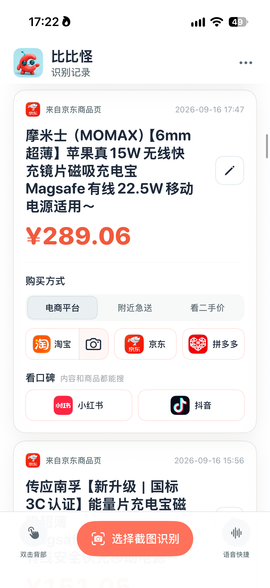

轻点 iPhone 背面，从当前页面开始，换个平台查价。
轻点背面触发识别 → 整理酒店信息 → 选择另一平台继续查询。
首次使用，按 App 内引导设置快捷指令及“轻点背面”。也支持手动选择截图识别。
4K 原画质 · HEVC / AAC · 134.5 MB
在原有外卖和商品查询基础上，新增酒店与机票识别；完善双击背面的设置引导和上手练习，并改进识别结果的编辑与问题反馈。
识别页面信息，再选择其他平台继续查询，减少重复输入和来回查找。

图像和视频为实际使用示例，保留原始日期与价格；用于展示操作流程。比较时请在目标平台核对房型、行程、规格与最终价格。